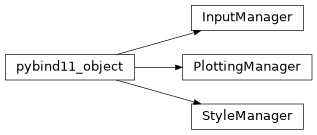

plotting
The plotting module can be used to make beautiful plots. See the plotting wiki page for information on how to configure the plotting library to work with your MaCh3 output files and other non-MaCh3 based fitters so you can compare results.
The main class to worry about is pyMaCh3._pyMaCh3.plotting.PlottingManager which provides the
high level functionality and gives you access to everything else you should need.
To use this in your plotting script simply do
## import the plotting module
from pyMach3 import plotting
## need sys to read command line arguments
import sys
man = plotting.PlottingManager()
## give the command line arguments to the manager
manager.parse_inputs(sys.argv)
## Now plot stuff!!
## ...
pyMaCh3._pyMaCh3.plotting Module
This is a Python binding of MaCh3s C++ based plotting library.
Classes
Class Inheritance Diagram
